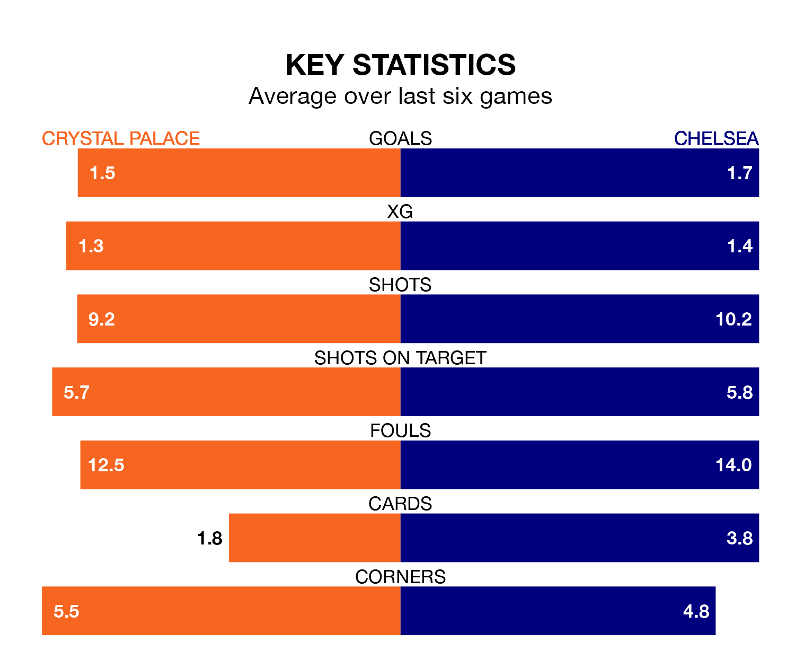

Crystal Palace host Chelsea on Monday at Selhurst Park in the Premier League.
In their last league match, on February 3, Palace lost to Brighton and Hove Albion 4-1 away, with their goal scored by Jean-Philippe Mateta.
Chelsea also lost, 4-2 at home against Wolverhampton Wanderers on February 4, with Cole Palmer and Thiago Silva on the scoresheet.
In the last 10 years, Palace and Chelsea have played each other on 21 occasions. Palace won four of them and Chelsea 17.
On average, the Eagles scored 0.7 goals and the Blues 1.9 in those matches.
Their last meeting was on December 27, when Chelsea won 2-1 at home.
With 26 goals in 23 games so far this season, Palace are scoring at below the league average rate with 1.1 goals per game. And they are conceding more than average, letting in 40 goals at a rate of 1.7 per game.
Chelsea, meanwhile, are above average scorers, with 1.7 goals per game, compared to a league average of 1.6. They have also conceded 1.7 goals per game.
The Eagles are 15th in the table after 23 games, of which they have won six and drawn six, earning 24 points.
The Blues are four places ahead of the hosts in 11th, with nine wins and four draws putting them on 31 points.
Palace are in mixed form in the Premier League, with two wins and a draw from their last six games.
With three wins and three losses over that period, the away side's form is slightly better – they have taken nine points from 18, compared to Palace's seven.
Updated: 10:28 (UTC), 06/02/24